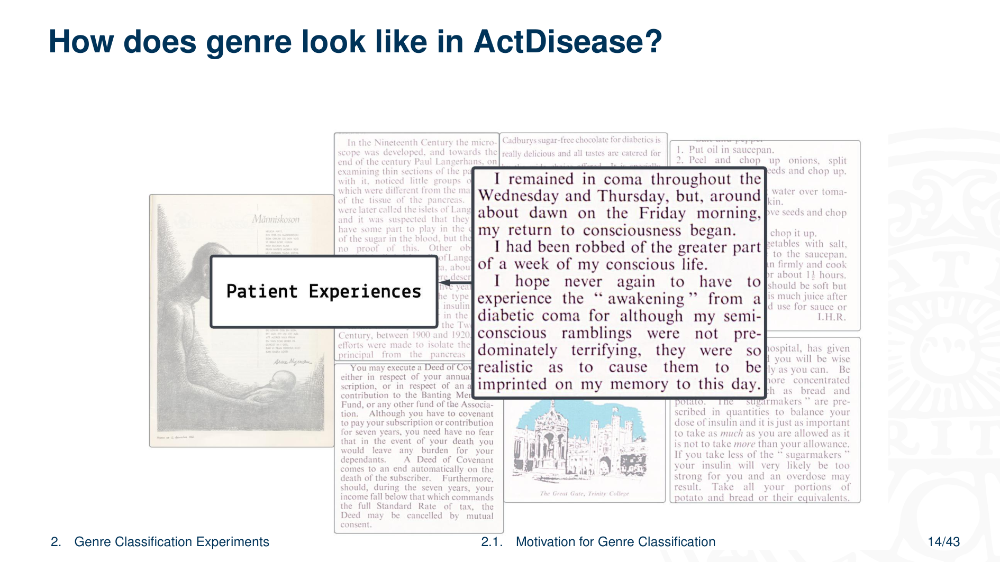

5 Genre Classification for Historical Medical Periodicals
Overview
This report systematically documents the methodology and findings of ActDisease, an ERC-funded research initiative. The project meticulously investigates the historical evolution of patient organisations in 20th-century Europe. The authors primarily utilise a substantial, recently digitised collection of patient organisation periodicals, encompassing 96,186 pages from Sweden, Germany, France, and the UK. Acknowledging the inherent challenges of digitisation, particularly Optical Character Recognition (OCR) errors in complex layouts and creative texts, the research team has explored post-OCR correction techniques using instruction-tuned generative models.
A central objective involves classifying the diverse textual genres within these historical magazines. This crucial step facilitates fine-grained historical analysis that transcends the limitations of aggregate topic models. Under expert historical supervision, the authors defined nine distinct genres: Academic, Administrative, Advertisement, Guide, Fiction, Legal, News, Nonfiction Prose, and QA. This classification ensures both analytical utility and general applicability. An annotation project involving six project members achieved a high inter-annotator agreement (0.95 Krippendorff’s alpha) on paragraphs sampled from Swedish and German periodicals.
Given the scarcity of annotated data, the authors rigorously explored both zero-shot and few-shot learning paradigms. Zero-shot experiments leveraged publicly available, modern datasets, including the Corpus of Online Registers of English (CORE), Functional Text Dimensions (FTD), and UD-MULTIGENRE, through a meticulous genre mapping process. These experiments employed multilingual encoders such as XLM-Roberta, mBERT, and historical mBERT, revealing varying performance across genres and models, alongside class-specific biases.
Few-shot learning, conducted on the ActDisease dataset, demonstrated clear performance advantages with increased training instances, particularly for historical mBERT when coupled with prior Masked Language Model (MLM) fine-tuning. Additionally, the authors investigated few-shot prompting with the Llama 3.1 8b Instruct model, observing its capacity to handle certain genre labels effectively, whilst highlighting the need for more comprehensive examples for others.
The findings underscore the inherent complexity of text mining popular magazines due to their rich genre diversity. They affirm genre classification as an indispensable tool for rendering these historical sources accessible for nuanced textual analysis. Future work encompasses refining annotation schemes, generating synthetic data, and implementing active learning strategies to further enhance classification quality.
5.1 The ActDisease Project: Objectives and Source Materials
The ActDisease project, an initiative funded by the European Research Council, meticulously investigates the historical trajectory of patient organisations across 20th-century Europe. The authors specifically aim to understand how these organisations fundamentally shaped disease concepts, influenced illness experiences, and contributed to the evolution of medical practices. Their study concentrates on ten distinct European patient organisations, drawing examples from Sweden, Germany, France, and Great Britain, covering the period from approximately 1890 to 1990. Crucially, the primary source material comprises periodicals, predominantly magazines, published by these patient organisations. The project team notes the historical significance of locations such as Heligoland, Germany, which served as the founding place for the Hay Fever Association of Heligoland in 1897.
5.2 ActDisease Dataset Composition
The ActDisease project has assembled a comprehensive private dataset, comprising a recently digitised collection of patient organisation magazines. This extensive corpus totals 96,186 pages, providing a rich foundation for historical inquiry. The dataset encompasses materials from various European countries, each focusing on specific diseases and spanning distinct chronological periods.
Specifically, the German collection includes:
Two magazines on Allergy/Asthma, covering 10,926 pages from 1901 to 1985.
One magazine on Diabetes, with 19,324 pages from 1931 to 1990.
One on Multiple Sclerosis, contributing 5,646 pages from 1954 to 1990.
Swedish contributions feature:
One Allergy/Asthma magazine (4,054 pages, 1957-1990).
One Diabetes magazine (7,150 pages, 1949-1990).
One Lung Diseases magazine (16,790 pages, 1938-1991).
From France, the dataset incorporates:
One Diabetes magazine (6,206 pages, 1947-1990).
Three magazines on Rheumatism/Paralysis (9,317 pages, 1935-1990).
Finally, the UK component includes:
One Diabetes magazine (11,127 pages, 1935-1990).
One Rheumatism magazine (5,646 pages, 1950-1990).
This detailed breakdown highlights the breadth and depth of the primary source material.
5.3 Digitisation Challenges and Post-OCR Correction
The digitisation process for the ActDisease dataset primarily employed ABBYY FineReader Server 14 for Optical Character Recognition. This tool generally performed well, accurately recognising most common layouts and fonts encountered in the periodicals. Nevertheless, significant challenges persisted, particularly with complex page layouts, slanted text, rare font types, and inconsistencies arising from varying scan or photo quality.
These issues frequently resulted in OCR errors, notably in German and French texts, and often led to a disrupted reading order within documents. To address these limitations, Danilova and Aangenendt conducted specific experiments focusing on post-OCR correction of German texts, leveraging instruction-tuned generative models. This work is detailed in their forthcoming publication. A notable observation during this phase was the high frequency of OCR errors in creative textual elements, such as advertisements, humour pages, and poems, which often feature non-standard formatting or stylistic choices.
5.4 Motivation for Genre Classification: Addressing Textual Diversity

A significant challenge in analysing the ActDisease materials stems from their inherent textual diversity. The authors observed a wide array of text types within the periodicals, a diversity that remained consistent across all magazines. Crucially, these disparate text types frequently co-occurred on the same page; for instance, an administrative report might appear alongside an advertisement or a humour section.
Existing analytical methods, such as yearly and decade-based topic models and term counts, inherently fail to account for this intricate co-occurrence of genres. Consequently, these aggregate analyses are likely to exhibit a bias, disproportionately reflecting the characteristics of the most frequent text type present on a page or within a given period. This limitation underscores the necessity for a more granular approach to textual analysis.
5.5 Textual Diversity and Analytical Limitations
The ActDisease materials exhibit a profound textual diversity, with a wide array of text types appearing consistently across all magazines. Notably, these distinct text types frequently co-exist within the same page, presenting a complex analytical landscape. For example, a single page might feature an administrative report, an advertisement, and a humour section, each serving a unique communicative purpose.
5.6 Limitations of Aggregate Topic Modelling
The periodicals within the ActDisease dataset demonstrate a consistent textual diversity, with a variety of text types appearing across all magazines. A key challenge arises from the co-occurrence of distinct text types on a single page; for instance, an administrative report might share space with an advertisement or a humour section. This intricate intermingling of genres poses a significant limitation for conventional analytical methods, as yearly and decade-based topic models and term counts inherently fail to account for such fine-grained textual variations.
5.7 Addressing Bias in Textual Analysis
The ActDisease materials consistently exhibit a wide range of text types across all magazines. A critical observation reveals that distinct text types frequently appear side-by-side on the same page, such as administrative reports, advertisements, and humour sections. Conventional analytical approaches, including yearly and decade-based topic models and term counts, do not adequately account for this intricate co-occurrence. Consequently, these methods are prone to bias, disproportionately emphasising the characteristics of the most frequently occurring text type within a given analytical unit.
5.8 Genre as a Foundational Concept for Historical Analysis

Recognising the limitations of aggregate analysis, genre emerged as a particularly useful concept for distinguishing between various text types. Within Language Technology, Petrenz (2004) and Kessler (1997) define genre as a class of documents united by a shared communicative purpose. This conceptual framework directly supports the project’s core objective: to explore the historical data from multiple perspectives, thereby facilitating robust historical arguments.
Specifically, genre classification enables a nuanced study of communicative strategies as they evolve over time, as Broersma (2010) highlights. This approach allows for comparative analysis across different countries, diseases, and publications. Furthermore, it facilitates a more granular examination of term distributions and the application of topic models, ensuring that these analyses are conducted within specific genre groups, thereby enhancing their precision and historical relevance.
5.9 Illustrative Genre Examples within the ActDisease Dataset
To illustrate the practical application of genre classification within the ActDisease dataset, the authors provide several concrete examples. These instances demonstrate the diverse textual forms encountered in the historical periodicals and clarify how distinct genres manifest within the corpus.
5.10 Genre Examples: Academic Reports
One illustrative example of genre within the dataset is an academic report. This specific instance details studies conducted on the pancreas, showcasing the presence of scientific and research-oriented content within the periodicals.
5.11 Genre Examples: Legal Documents
Another distinct genre identified is legal documentation. An example provided is a deed of covenant, demonstrating the inclusion of formal legal texts within the historical periodicals.
5.12 Genre Examples: Advertisements

The dataset also features advertisements as a prominent genre. One particular example showcases an advertisement for chocolate, specifically formulated and marketed for individuals with diabetes, reflecting the commercial aspects present in these historical publications.
5.13 Genre Examples: Instructive/Guidance Texts
Instructive or guidance texts form another key genre. Examples include practical advice, such as recipes, or medical guidance provided by doctors, including dietary recommendations. These texts aim to inform and direct the reader on specific actions or health-related matters.
5.14 Genre Examples: Patient Organisation Reports
Patient organisation reports constitute a significant genre within the corpus. These documents typically detail the proceedings of meetings and outline the various activities undertaken by the organisations, providing insight into their operational aspects.
5.15 Genre Examples: Patient Experiences
Finally, the dataset includes narratives focused on patient experiences. These texts recount personal stories and aspects of patient lives, offering qualitative insights into the lived realities of individuals with specific health conditions.
5.16 Genre Classification Experiments: Zero-Shot and Few-Shot Learning
Given the significant constraint of very limited annotated data, the authors systematically explored both zero-shot and few-shot learning paradigms for genre classification. The zero-shot investigations addressed two primary research questions: firstly, whether an efficient mapping of genre labels from publicly available datasets to the project’s custom labels could yield satisfactory performance on the test set; and secondly, how classification performance might vary across different external datasets and models.
For few-shot learning, the inquiry focused on understanding how performance changes with varying training data sizes across different models. A further crucial question examined whether prior fine-tuning on the entire dataset could substantially enhance classification performance. These experiments form the basis of a forthcoming publication by Danilova and Söderfeldt, presented at LaTeCH-CLFL 2025.
5.17 Defining Custom Genre Labels for Historical Analysis

The project meticulously defined its custom genre labels under the direct supervision of the main historian, an expert in patient organisations. This collaborative approach ensured that the labels would prove highly useful for segmenting content within the ActDisease materials, thereby facilitating more granular historical analysis. Furthermore, the design principle aimed for maximum generality, enabling the classifier’s potential application to similar historical datasets beyond the immediate scope of the project.
5.18 Defined Genres and Their Communicative Purposes
The authors established a comprehensive set of genres, each with a clearly defined communicative purpose:
Academic texts encompass research-based reports or explanations of scientific ideas, such as articles or formal reports, primarily aiming to convey information from the scientific and medical community to the magazine’s readership.
Administrative documents, including meeting minutes, reports, or announcements, serve to inform readers about the patient organisation’s events and activities.
Advertisements explicitly promote products or services for commercial ends.
Guide texts offer step-by-step instructions, ranging from health tips and legal advice to recipes.
Fiction, conversely, seeks to entertain and emotionally engage through stories, poems, humour, or myths.
Legal documents elucidate terms and conditions, encompassing contracts, rules, and amendments.
News reports recent events and developments.
Nonfiction Prose narrates real events or describes cultural and historical topics, exemplified by memoirs, essays, or documentaries.
QA (Question and Answer) sections present structured questions alongside expert responses, directly sourced from the periodicals themselves.
5.19 Annotation Methodology and Inter-Annotator Agreement

For the annotation process, the authors defined the paragraph as the primary unit. These paragraphs originated from the ABBYY OCR output and were subsequently merged based on consistent font patterns—including type, size, plain text, and italics—within each page. The annotation effort focused on a carefully selected sample from two periodicals: the Swedish “Diabetes” and the German “Diabetiker Journal,” specifically their first and mid-year issues from each publication year.
Six project members undertook the annotation task, comprising four historians and two computational linguists, all possessing native or proficient fluency in either Swedish or German. Each paragraph received two independent annotations. This rigorous approach yielded an impressive average inter-annotator agreement of 0.95, measured by Krippendorff’s alpha, signifying a remarkably high level of consistency amongst the annotators.
5.20 Annotation Process Illustration
To illustrate the annotation process, the authors presented a sample from the periodical “Der Diabetiker.” This example took the form of a screenshot from a .numbers file, the digital tool employed by the annotators. Whilst the original sentences appeared in German, the illustration provided Google Translate renditions for clarity. The file structure featured columns for metadata such as Year, Volume, Issue Number, Title, and the Paragraph text itself. Following these, a series of binary flag columns corresponded to each defined genre—academic, administrative, advertisement, fiction, guide, nonfiction prose, legal, QA, and news. Annotators were tasked with providing definitive, hard assignments for the genre of each paragraph, a process that, whilst challenging, they successfully completed.
5.21 Dataset Splitting and Experimental Configurations
For the experimental phase, the authors meticulously split the annotated data into distinct sets. The main division comprised a training set of 1182 paragraphs and a held-out set of 552 paragraphs, constituting approximately 30% of the total annotated data, with stratification applied by label.
For few-shot experiments, the training data was further subdivided into six different sizes: 100, 200, 300, 400, 500, and the full 1182 paragraphs. The authors randomly sampled these subsets from the main training set, ensuring balance across labels. The held-out set was then equally partitioned into validation and test sets, also maintaining label balance. Notably, the legal and news genres were excluded from these experiments due to insufficient training data. Conversely, zero-shot experiments utilised the entirety of the test set.
5.22 Genre and Language Distribution in ActDisease Datasets
A visual representation of the ActDisease dataset’s composition reveals the distributions across languages and genres within both the training and held-out samples. The authors’ analysis highlighted a pronounced imbalance in the representation of advertisement and non-fictional prose genres when examined across different languages, indicating potential challenges for models in generalising across these categories.
5.23 External Datasets for Zero-Shot Genre Classification
For the zero-shot experiments, the authors incorporated several external datasets, drawing primarily from modern collections previously utilised in automatic web genre classification. The Corpus of Online Registers of English (CORE), compiled by Egbert et al. (2015), provided English data, alongside main categories in Swedish, Finnish, and French, with annotations at the document level. Similarly, the Functional Text Dimensions (FTD) dataset of web genres, developed by Sharoff (2018), offered balanced English and Russian content, also annotated at the document level, and had seen prior application in web genre classification by Kuzman et al. (2023). Additionally, a subset of Universal Dependencies, known as UD-MULTIGENRE (de Marneffe et al., 2021), provided genre annotations at the sentence level across 38 languages, with recovered annotations by Danilova and Stymne (2023).
5.24 Cross-Dataset Genre Mapping
A critical step in the zero-shot methodology involved mapping the project’s custom genre labels to those present in the external datasets. The authors employed two independent annotators for this genre mapping, with only assignments achieving full agreement selected for the final mapping. The resulting table illustrates how ActDisease genres—including Academic, Administrative, Advertisement, Guide, Fiction, Legal, News, Nonfiction, and QA—correspond to labels within the CORE, UDM, and FTD datasets. Notably, the authors observed that certain ActDisease genres lacked suitable, directly mappable equivalents within the available external datasets, posing a challenge for comprehensive cross-dataset alignment.
5.25 Training Data Creation Pipeline and Model Fine-tuning
The training data creation pipeline commenced with the established genre mapping, followed by crucial preprocessing, chunking, and sampling stages. The authors generated training sets in four distinct configurations: one focusing exclusively on Germanic languages ([G+]), another balancing data according to the ActDisease labels ([B1]), a third incorporating all language families ([G-]), and a final configuration balancing data by both ActDisease and original labels ([B2]).
This systematic approach yielded four training samples each from the FTD, CORE, UDM, and a merged dataset. Subsequently, these samples underwent fine-tuning with a selection of multilingual encoder models, specifically XLM-Roberta, mBERT, and hmBERT. This comprehensive process ultimately produced a total of 48 fine-tuned models for evaluation.
5.26 Multilingual Encoder Models for Genre Classification

For the genre classification experiments, the authors employed a selection of robust multilingual encoder models. These included XLM-Roberta, developed by Conneau et al. (2020); mBERT, introduced by Devlin et al. (2019); and historical mBERT, a model from Schweter et al. (2022). The choice of these models was deliberate, resting on their proven efficacy in prior research.
BERT-like models, in general, have seen extensive application in web register and genre classification, as evidenced by works from Lepekhin and Sharoff (2022), Kuzman and Ljubešić (2023), and Laippala et al. (2023). XLM-RoBERTa, in particular, stands out as a state-of-the-art web genre classifier, according to Kuzman et al. (2023). Historical mBERT held particular interest due to its pretraining on a substantial corpus of multilingual historical newspapers, which notably encompassed the languages relevant to the ActDisease project. Conversely, mBERT served as a crucial comparative baseline against historical mBERT, as direct comparisons with XLM-Roberta were not feasible.
5.27 Model Training and Evaluation Metrics
Following the comprehensive fine-tuning process across all specified configurations, the authors successfully generated 48 distinct models. For evaluation purposes, they computed and presented the performance metrics as averages across these diverse configurations, providing a robust overview of the models’ capabilities.
5.28 Zero-Shot Learning Evaluation Methodology
Evaluating the zero-shot predictions presented a unique challenge: the imperfect overlap between the project’s custom genre labels and those in the external datasets precluded a direct comparison of overall performance metrics. To circumvent this, the authors meticulously assessed the performance of each genre individually, whilst also analysing confusion matrices to identify and mitigate potential biases.
The X-GENRE web genre classifier, a state-of-the-art model developed by Kuzman et al. (2023), served as a crucial baseline. Predictions were strictly limited to the most similar labels that could be directly mapped to the project’s custom categories. Furthermore, the evaluation acknowledged the cross-lingual nature of certain scenarios: the FTD and X-GENRE applications were entirely cross-lingual, lacking German or Swedish training data, whilst the UDM and CORE datasets presented partially cross-lingual contexts.
5.29 Zero-Shot Classification Results and Model Biases
Overall, the zero-shot classification experiments revealed that models fine-tuned on the Functional Text Dimensions (FTD) dataset exhibited superior performance when applied with the project’s custom genre mapping. Whilst most configurations avoided significant bias, other datasets demonstrated distinct class-specific tendencies. For instance, models trained on UD-MULTIGENRE (UDM) showed a bias towards news, primarily because the news training data contained the highest proportion of Germanic instances, predominantly German. Conversely, CORE-based models displayed a bias towards the guide genre, as only its guide training data was multilingual.
Intriguingly, specific models demonstrated notable strengths in particular genres. XLM-Roberta, when fine-tuned on UDM, achieved an average of 32% more correct predictions in the QA category compared to mBERT and hmBERT. Similarly, hmBERT, also on UDM, outperformed XLM-Roberta and mBERT in the Administrative genre by an average of 16% more correct predictions. Furthermore, models trained on CORE consistently performed well in predicting legal texts.
5.30 Visualising Zero-Shot Performance: Confusion Matrices
To provide a granular understanding of the zero-shot classification performance, the authors presented confusion matrices for several key configurations. These visualisations critically highlight specific classification behaviours, such as instances of particularly strong performance in certain categories or recurring patterns of misclassification, which were explicitly delineated with red frames for emphasis.
5.31 Detailed Zero-Shot F1 Scores by Category

The detailed average F1 scores for each category provide a comprehensive overview of the zero-shot classification performance. Notably, specific values were highlighted, indicating instances where the observed performance did not stem from systematic biases towards those particular categories, thereby suggesting more robust and generalisable classification capabilities.
5.32 Overall Average Performance Across Configurations
The authors elected to bypass a detailed discussion of the overall average performance across configurations during the presentation.
5.33 Few-Shot Learning Performance and MLM Fine-tuning
The few-shot learning experiments unequivocally demonstrated that further training on the ActDisease dataset, especially when augmented with Masked Language Model (MLM) fine-tuning, confers a distinct advantage. The authors observed a consistent upward trend in the F1 score as the number of training instances increased, although performance remained below 0.8 even with the largest training set of 1182 instances.
Crucially, hmBERT-MLM emerged as the top performer amongst the models. Prior MLM fine-tuning significantly boosted the performance of this historical model, enabling it to outperform all other models, albeit by a narrow margin. This finding underscores the value of domain-specific pre-training for enhanced classification accuracy in low-resource settings.
5.34 Detailed Few-Shot Performance: Per-Category F1 and Overall Metrics

A granular examination of the detailed scores revealed the underlying reason for hmBERT’s superior performance in the few-shot learning paradigm. This model uniquely maintained its ability to distinguish between fiction and nonfiction genres, even when utilising the full dataset size. Conversely, other models, notably XLM-Roberta, exhibited a drastic decline in performance when attempting to differentiate these two categories, highlighting a specific area of weakness in their classification capabilities.
5.35 Challenges in Distinguishing Fiction and Nonfiction Prose
An analysis of the XLM-Roberta-MLM confusion matrix, particularly with the full-sized training dataset, revealed a persistent challenge: nonfiction prose was frequently overpredicted as fiction. This phenomenon suggests that, with larger datasets, fiction and nonfictional prose may become increasingly similar in their textual characteristics. This convergence is likely exacerbated by the domain-specific nature of the corpus, as all genres are confined to patient organisation magazines primarily focused on diabetes. Consequently, both fictional and (auto)biographical texts frequently revolve around the shared experiences of diabetes patients, leading to an overlap in themes and narrative structures. The authors conclude that more data is likely required to enhance the model’s ability to accurately differentiate between these two closely related genres.
5.36 Few-Shot Prompting Evaluation

The authors also undertook an evaluation of few-shot prompting techniques, exploring their efficacy in genre classification.
5.37 Few-Shot Prompting with Llama 3.1 8b Instruct
Given the current lack of sufficient data for comprehensive instruction tuning, the authors explored few-shot prompting with Llama 3.1 8b Instruct, a widely recognised multilingual generative model with open weights. The prompt structure incorporated clear genre definitions, supplemented by two to three carefully selected examples for each category.
The results, measured by F1-score, indicated varied performance across genres: QA achieved 0.62, academic 0.72, administrative 0.60, advertisement 0.73, fiction 0.64, guide 0.61, legal 0.84, news 0.08, and nonfictional prose 0.49. Overall metrics included an accuracy of 0.62, a macro average of 0.59, and a weighted average of 0.63. Whilst the model handled certain labels competently, the limited number of examples proved insufficient to adequately represent the nuances of some genres, particularly nonfictional prose, advertisement, and administrative texts.
5.38 Conclusions: Genre Diversity and Text Mining Challenges
The authors conclude that popular magazines, unlike more homogenous scientific journals or books, frequently contain a multitude of genres, which inherently complicates text mining efforts. Nevertheless, these magazines represent a highly promising source for historical research, particularly within the history of science. The rich diversity of genres within these publications directly reflects the deliberate choices of communicative strategies employed by their authors and editors.
Whilst accounting for these varied genres presents a significant challenge, it remains critically important for ensuring the accurate and detailed interpretation of text mining results. Ultimately, genre classification emerges as a vital methodology, capable of rendering these complex historical sources accessible for advanced textual analysis.
5.39 Leveraging Modern Datasets for Zero-Shot Classification

Popular magazines, characterised by their rich genre diversity, pose a greater challenge for text mining than more uniform scientific journals or books. Despite this, genre classification offers a powerful means to render these sources accessible for advanced textual analysis. Crucially, even in the absence of specific training data, the authors can successfully leverage existing modern datasets for classification, particularly when working with broadly defined, general-purpose genre categories.
5.40 Effectiveness of Open Generative Models
The inherent genre diversity of popular magazines renders text mining more complex than for scientific journals or books. Nevertheless, genre classification provides a vital pathway to make these historical sources amenable to textual analysis. When confronted with a lack of specific training data, the authors can effectively utilise existing modern datasets. Furthermore, open generative models have demonstrated their capacity to achieve a decent level of classification quality, offering a viable alternative in resource-constrained scenarios.
5.41 Superiority of Few-Shot Learning with Multilingual Encoders
Popular magazines, with their rich array of genres, present a more intricate challenge for text mining than the more uniform content of scientific journals or books. Despite this, genre classification proves instrumental in making these historical sources accessible for analysis. In situations where specific training data is scarce, leveraging available modern datasets offers a viable solution. Whilst open generative models can achieve a respectable level of quality, few-shot learning applied to multilingual encoders, particularly when combined with prior Masked Language Model (MLM) fine-tuning, consistently demonstrates superior performance.
5.42 Significant Gains with Historical Multilingual BERT

The inherent genre diversity of popular magazines renders text mining more complex than for scientific journals or books. Nevertheless, genre classification proves instrumental in making these historical sources accessible for analysis. In situations where specific training data is scarce, leveraging available modern datasets offers a viable solution. Whilst open generative models can achieve a respectable level of quality, few-shot learning applied to multilingual encoders, particularly when combined with prior Masked Language Model (MLM) fine-tuning, consistently demonstrates superior performance. Notably, historical multilingual BERT exhibited particularly strong gains, achieving a 24% improvement, significantly outperforming mBERT-MLM (14.5%) and XLM-RoBERTa (16.9%).
5.43 Ongoing and Future Research Directions
The project continues to advance, currently engaging with specific historical hypotheses to deepen its analytical insights. The authors are actively developing a new annotation scheme designed to capture more fine-grained genre distinctions, an initiative supported by funding from Swe-CLARIN. Furthermore, the team is exploring advanced methodologies such as synthetic data generation and active learning to enhance the quality and efficiency of their classification efforts.
5.44 Acknowledgements
The authors gratefully acknowledge the invaluable contributions of their annotators, comprising the dedicated project team members: Ylva Söderfeldt, Julia Reed, Andrew Burchell, Maria Skeppstedt, and Gijs Aangenendt. Funding for this research was generously provided by the European Research Council under grant ERC-2021-STG 10104099. The Centre for Digital Humanities and Social Sciences offered crucial support, including access to GPUs and data storage facilities. Finally, the authors extend their gratitude to Dr Maria Skeppstedt and the anonymous reviewers for their insightful feedback.
5.45 Concluding Remarks
The authors concluded their presentation with a reference to the project’s official website, inviting further engagement with the research.